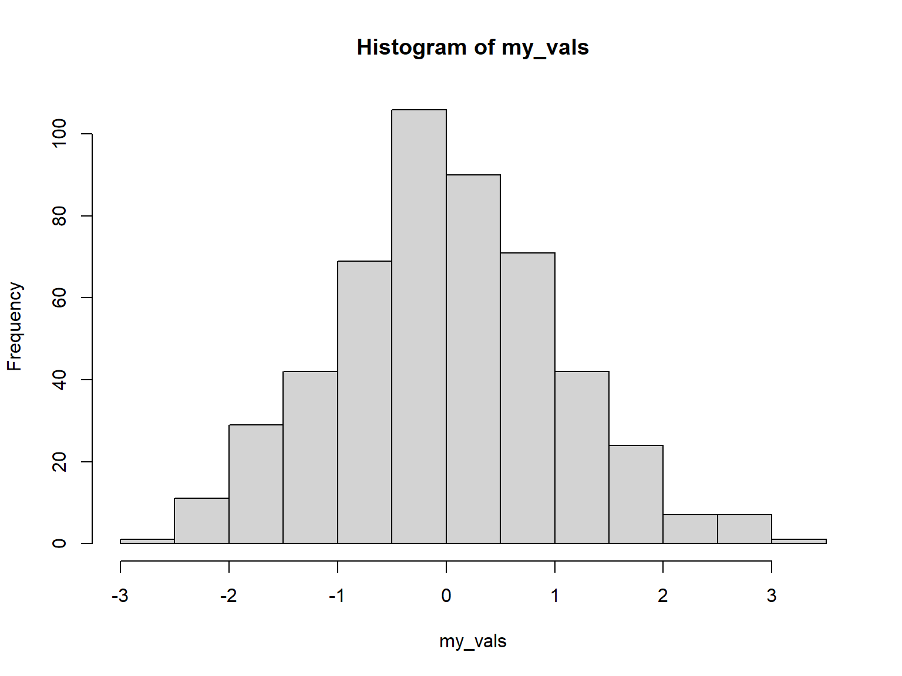

R as a fancy calculator: (pi
* 5 ^ 2) / sqrt(4 / 3)
Saving results as objects: my_volume = (4 / 3) * pi * (1.5 ^ 3)
All R objects have a class (e.g., numeric, character,
data frame)
Objects that contain multiple values of the same class are called
vectors
Some functions that return
vectors: seq() rnorm() sample()
You can build vectors from scratch using:
c()
You can subset or extract elements from vectors using square
brackets:
With a
vector of integers (indices): LETTERS[1:4] Logical vector: LETTERS[
c(T,T,T,T,F,F,F,F,F,F,F,F,F,F,F,F,F,F,F,F,F,F,F,F,F,F)
] Logical expression: x =
1:100 x [x %% 3 == 0]
Functions and operators that do something to each element of a
vector and return another vector are said to be
vectorized + - * / round(), abs()
Functions that take multiple elements of a vector and spit out a
single value are said to be aggregate
functions sum(), min(), mean(), max()
Scripts
Top five advantages of using scripts over the console:
Easier to write (and fix!) your code
You can add comments to remind yourself what each command is doing
Reuse your own code
You can add loops and if-then statements later on
Tell your friends you’re a
coder!
Plotting!
Base R has simple plotting functions you can use to view the
distribution of data.
Histograms
To make a histogram, use hist():
my_vals =rnorm(500)hist(my_vals)

Box Plots
Prefer a box plot?
boxplot(my_vals)
Scatter Plots
The versatile plot() can be used to make a simple
scatter plot: